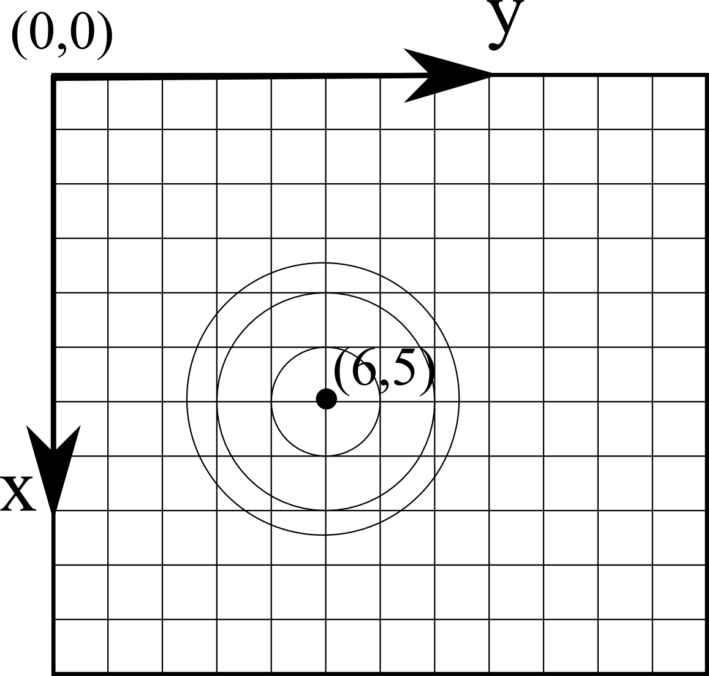

HoloPy does not enforce any particular set of units. As long as you are consistent, you can use any set of units, for example pixels, meters, or microns. So if you specify the wavelength of your red imaging laser as 658 then all other units (x, y, z position coordinates, particle radii, etc.) must also be specified in nanometers.
For Image data (data points arrayed in a regular grid in a single plane), HoloPy defaults to placing the origin, (0,0), at the top left corner as shown below. The x-axis runs vertically down, the y-axis runs horizontally to the right, and the z-axis points out of the screen, toward you. This corresponds to the way that images are treated by most computer software.
Note
Using subimage() changes the origin attribute of an Image to be relative to the original input. This is particularly relevant for using subimaged images as a Schema for scattering calculations (such as computing holograms): coordinates of Scatterer objects need to be specified relative to the original image.
In sample space, we choose the z axis so that distances to objects from the camera/focal plane are positive (have positive z coordinates). The price we pay for this choice is that the propagation direction of the illumination light is then negative.
More complex detector geometries will define their own origin, or ask you to define one.
Certain scattering calculations in HoloPy require specifying the orientation of a scatterer (such as a Janus sphere) relative to the HoloPy coordinate system. We do this in the most general way possible by specifying three Euler angles and a reference orientation. Rotating a scatterer initially in the reference orientation through the three Euler angles \(\alpha\), \(\beta\), and \(\gamma\) (in the active transformation picture) yields the desired orientation. The reference orientation is specified by the definition of the scatterer.
The Euler rotations are performed in the following way:
The sense of rotation is as follows: each angle is a rotation in the clockwise direction about the specified axis, viewed along the positive direction of the axis from the origin. This is the usual sense of how rotations are typically defined in math.
{kind=link}